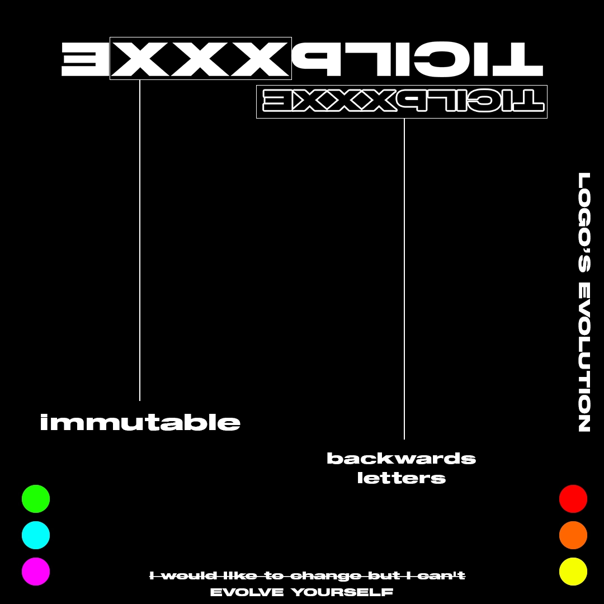

Progetti in evidenza
Identità di brand & Direzione artistica
Sistemi di identità completi, con attenzione alla tipografia, alla narrazione e alla coerenza visiva.

Taptap
Identità visiva completa, sistema di logo e linee guida per un ecosistema NFC che collega i punti di contatto fisici a interazioni digitali immediate.
Brand Identity • Art Direction • NFC Ecosystem • Visual Strategy

TOKKO
Identità di brand completa, linee guida del logo, campagne pubblicitarie social e mockup di interfacce e-commerce mobile per un marchio gourmet italiano.
Brand Identity • Art Direction • Social Ads • Packaging

Exxxplicit
Progetto completo di identità visiva, con attenzione alla coerenza, al tono di voce, al sistema tipografico e all’estetica del brand.
Visual Identity • Logo Design • Typography • Merchandising